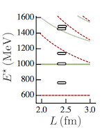

|  |
Review of scattering and resonance physics using lattice QCD published in Reviews of Modern PhysicsA pedagogic review of the progress made recently in determining the properties of unstable hadron resonances in lattice QCD has appeared in Reviews of Modern Physics. The paper was authored by Jo Dudek, Raul Briceno (ODU/JLab) and Ross Young (Adelaide). |

|
Colin Egerer awarded DoE Graduate Student Research fellowshipThe award will support Colin's ongoing research into the structure of hadrons using lattice QCD tools under the supervision of David Richards and Kostas Orginos. |

|
Paper on $f_0, f_2$ resonances selected as "Editors' Suggestion" in Phys.Rev.DA paper co-authored by Jo Dudek studying low-lying resonances in coupled $\pi\pi, K\overline{K}, \eta\eta$ scattering has been selected to appear on the PRD website front-page by the Editors of the journal. |

|
Kostas Orginos sabbaticalKostas will be on sabbatical at the University of Cambridge, UK for the academic year 2017-2018. |

|
Carl Carlson sabbaticalCarl will be on sabbatical at the Johannes Gutenberg-University, Mainz, Germany for the academic year 2017-2018. |